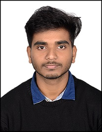

Abhijeet MahtoRanchi, Jharkhand+91 8986613652GitHub |
|
PROFESSIONAL SUMMARY Seeking a beginner role to enhance and explore my technical knowledge. I completed my Bachelor Degree in Bachelor of Computer Application (BCA). Currently pursuing Master of Computer Application (MCA). I’m an ambitious and hardworking individual with a great passion. I have an excellent communication skills, enabling me to effectively communicate with a wide range of people. I’m looking forward to a position in the industry where I can practice my knowledge and experience, ultimately benefiting the operations of the organisation that I work for. | |
Education > ATOMIC ENERGY CENTRAL SCHOOL,TURAMDIH, JAMSHEDPUR, JHARKHAND (10th) (Details) > ATOMIC ENERGY CENTRAL SCHOOL,JADUGODA, JAMSHEDPUR, JHARKHAND (12th) (Details) > BIRLA INSTITUTE OF TECHNOLOGY MESRA (BCA) (Details) > VELLORE INSTITUTE OF TECHNOLOGY CHENNAI, TAMIL NADU (MCA) (Details) | |
LICENSES & CERTIFICATIONS > VOCATIONAL TRAINING IN PHP and MYSQL at Advanced Regional telecom Training Centre (ARTTC) which is under BSNL (Bharat Sanchar Nigam Limited) > WORKSHOP ON JAVA organised by Dr. R.Radha, Dr. R.Jayanthi School of Computer Science and Engineering (SCOPE) and Dr.T.Subbulakshmi, Professor and Assistant Director, Academic Staff College (ASC) of VIT Chennai (Details) | |
PROJECTS AND RESEARCH WORK > MADE A PROJECT IN UG Application Name: Connect 4 (It is a two player board game) Built a Java FX application for the Connect 4 game with proper user interface with a 3-member group.Tools: Java FX & IDE: IntelliJ IDEA > ROBUST MECHANISM FOR THE PROTECTION OF PATIENT DATA & HOSPITAL MANAGEMENT USING CRYPTOGRAPHY Dr. Seshu Babu Pulagara (Assistant Professor VIT University Chennai)I was the Co-author for the research paper.The work is about securely sharing and recording of Patient’s Confidential Health Data in medical environment. | |
TECHNICAL SKILLS
| |
SOFT SKILLS | |
Experience 3rd FEBRUARY 2020 Participated in Smart Indian Hackathon (Details) Domain Bucket: Smart Communication & Healthcare Problem Statement: GPS based application that lets user to pin an issue and gain support. Team Name: 4GR-FOR GOOD |
|